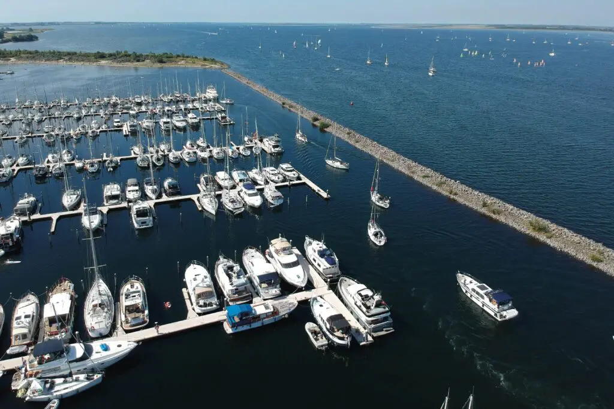
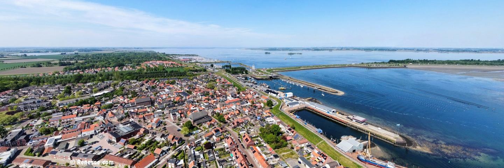

De haven
In de haven van Bruinisse kun je genieten van het uitzicht over het water en de boten. Het is een fijne plek om rustig te wandelen en de maritieme sfeer te beleven.

Van de gezellige jachthaven tot het mooie dorpscentrum: hier is genoeg te zien.
In de haven van Bruinisse kun je genieten van het uitzicht over het water en de boten. Het is een fijne plek om rustig te wandelen en de maritieme sfeer te beleven.

In het centrum vind je straatjes, winkels en gezellige plekjes. Bruinisse heeft een sterke band met de mosselvisserij en een eigen dorpskarakter.
